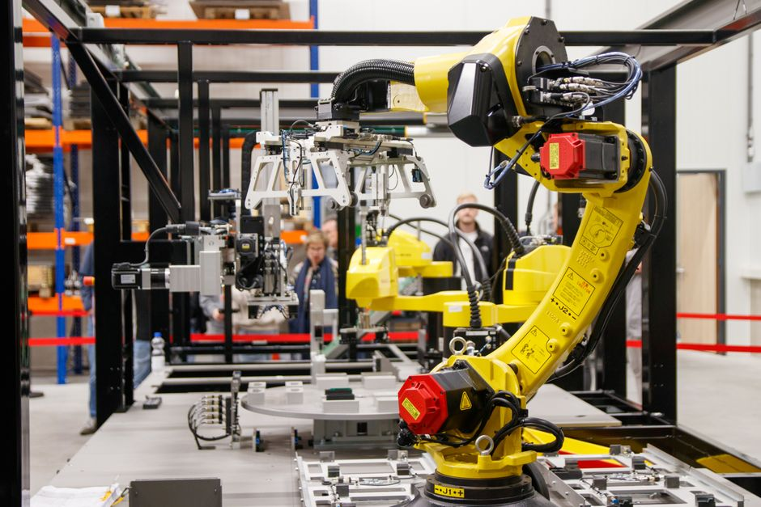

Step into almost any modern manufacturing plant today, from bustling car factories to precision electronics assembly lines, and you'll witness a fascinating ballet of synchronized motion. Giant metallic arms swing, tiny grippers delicately place components, and sparks fly as automated welders do their work with tireless precision. This isn't science fiction; it's the reality of industrial robotics and automation, a technological revolution that is reshaping industries worldwide, including right here in India. But what exactly are these incredible machines, how do they work, and what impact are they having on our world?
The Rise of the Machines: What are Industrial Robots?
At its core, an industrial robot is an automatically controlled, reprogrammable, multi-purpose manipulator, programmable in three or more axes, which can be either fixed in place or mobile for use in industrial automation applications. In simpler terms, think of them as highly specialized, super-strong, and incredibly precise "hands" or "arms" that can perform repetitive, dangerous, or complex tasks faster and more consistently than humans. They are the workhorses of modern manufacturing, designed to boost productivity, improve quality, and enhance safety in factories.
A Glimpse into the Past: Evolution of Industrial Robotics
While the concept of automatons has existed for centuries, the first true industrial robot, called "Unimate," was introduced in 1961 by George Devol and Joseph Engelberger. It was a massive, hydraulically powered arm used for die casting in a General Motors factory. From these humble, albeit groundbreaking, beginnings, industrial robots have evolved dramatically. Today, they are smaller, faster, more intelligent, and far more versatile, thanks to advancements in computing, sensors, materials science, and artificial intelligence.
Meet the Family: Types of Industrial Robots
Just like humans have different tools for different jobs, there are various types of industrial robots, each designed for specific tasks:
Articulated Robots
These are the most common type, resembling a human arm. They have rotary joints (like shoulders, elbows, and wrists) that allow them a wide range of motion and flexibility. They are excellent for tasks like welding, painting, material handling, and machine tending.
SCARA Robots (Selective Compliance Assembly Robot Arm)
SCARA robots are known for their fast and precise movements in the X-Y plane, with limited Z-axis movement. They are ideal for high-speed pick-and-place, assembly, and packaging operations, especially in electronics manufacturing.
Delta Robots (Parallel Robots)
Recognizable by their spider-like appearance, Delta robots use parallel linkages connected to a common base. They are incredibly fast and precise, making them perfect for light-payload, high-speed pick-and-place tasks, often seen in food packaging and pharmaceutical industries.
Cartesian/Gantry Robots
These robots move along three linear axes (X, Y, and Z), similar to a coordinate system. They offer high precision and can handle large payloads over a wide work envelope, commonly used for dispensing, assembly, and large-scale material handling.
Collaborative Robots (Cobots)
A newer and increasingly popular category, cobots are designed to work safely alongside humans without the need for extensive safety guarding. They are often smaller, easier to program, and equipped with advanced sensors to detect human presence, making them suitable for tasks requiring human-robot collaboration.
The Brains and Brawn: How Industrial Robots Work
An industrial robot is a complex system composed of several key components:
- Manipulator (The Arm): This is the physical structure of the robot, with joints and links that provide its range of motion.
- End-Effector (The Hand): Attached to the end of the manipulator, this is the tool that performs the actual task. It could be a gripper, a welding torch, a paint spray gun, a vacuum suction cup, or even a screwdriver.
- Controller (The Brain): This is the computer that stores the robot's programs, processes sensor data, and sends commands to the motors to control the manipulator's movements.
- Actuators (The Muscles): These are typically electric motors (or sometimes hydraulic/pneumatic systems) that move the robot's joints.
- Sensors (The Senses): Robots use various sensors (vision systems, force sensors, proximity sensors) to perceive their environment, detect objects, ensure safety, and perform tasks with greater accuracy.
Programming an industrial robot involves teaching it a sequence of movements and actions. This can be done using a "teach pendant" (a handheld device with buttons and a screen to manually guide the robot through a task), or through "offline programming" where the robot's movements are simulated and programmed on a computer before being uploaded to the robot.
Here’s a simplified look at what a robot program might conceptually look like for a common "pick and place" task:
// Simple conceptual pseudo-code for a pick-and-place robot task
FUNCTION performPickAndPlace(pickup_point_X, pickup_point_Y, pickup_point_Z,
dropoff_point_X, dropoff_point_Y, dropoff_point_Z):
// 1. Move to a safe "home" position
MOVE_ARM_TO_JOINT_ANGLES(HOME_POSITION_ANGLES)
// 2. Approach the object to be picked up
MOVE_ARM_LINEARLY_TO_COORDINATES(pickup_point_X, pickup_point_Y, pickup_point_Z + APPROACH_OFFSET)
// 3. Move down to grasp the object
MOVE_ARM_LINEARLY_TO_COORDINATES(pickup_point_X, pickup_point_Y, pickup_point_Z)
// 4. Activate the gripper to grab the object
ACTIVATE_GRIPPER(CLOSE)
// 5. Lift the object slightly
MOVE_ARM_LINEARLY_TO_COORDINATES(pickup_point_X, pickup_point_Y, pickup_point_Z + LIFT_OFFSET)
// 6. Move to the drop-off location
MOVE_ARM_LINEARLY_TO_COORDINATES(dropoff_point_X, dropoff_point_Y, dropoff_point_Z + APPROACH_OFFSET)
// 7. Move down to place the object
MOVE_ARM_LINEARLY_TO_COORDINATES(dropoff_point_X, dropoff_point_Y, dropoff_point_Z)
// 8. Deactivate the gripper to release the object
ACTIVATE_GRIPPER(OPEN)
// 9. Lift the arm clear of the placed object
MOVE_ARM_LINEARLY_TO_COORDINATES(dropoff_point_X, dropoff_point_Y, dropoff_point_Z + LIFT_OFFSET)
// 10. Return to home position, ready for the next task
MOVE_ARM_TO_JOINT_ANGLES(HOME_POSITION_ANGLES)
END FUNCTION
// Example of how you might call this function for a specific task
performPickAndPlace(100.0, 50.0, 20.0, // Pickup coordinates (X, Y, Z)
250.0, 150.0, 30.0) // Drop-off coordinates (X, Y, Z)
Robots at Work: Applications in India and Beyond
Industrial robots are revolutionizing diverse sectors. In India, the "Make in India" initiative and growing manufacturing sector are driving rapid adoption:
- Automotive Industry: From welding car bodies and painting vehicles to assembling engines and chassis, robots perform highly repetitive and precise tasks with unmatched speed and consistency.
- Electronics Manufacturing: Tiny components are picked and placed with microscopic accuracy, circuit boards are inspected, and devices are assembled at high volumes by robots.
- Logistics and Warehousing: Robots automate material handling, sorting packages, palletizing goods, and moving items around large warehouses, significantly speeding up supply chains.
- Food and Beverage: They handle delicate food items, package products, and palletize finished goods, ensuring hygiene and efficiency.
- Metal Fabrication: Robots are used for cutting, bending, grinding, and polishing metal parts, often in environments that are hazardous for humans.
- Healthcare: While not direct industrial applications in the traditional sense, robotic arms are being adapted for surgical assistance, laboratory automation, and pharmaceutical handling.
The Advantages of Automation: Why Robots Matter
The widespread adoption of industrial robots isn't just a trend; it's driven by significant benefits:
- Increased Efficiency and Productivity: Robots work tirelessly, without breaks, dramatically increasing output.
- Improved Quality and Consistency: They perform tasks with extreme precision, reducing errors and ensuring uniform product quality.
- Enhanced Safety: Robots can handle dangerous or repetitive tasks (like welding, heavy lifting, or working with hazardous materials), protecting human workers from injury.
- Cost Reduction (Long-term): While initial investment can be high, robots reduce labor costs, waste, and improve throughput, leading to significant savings over time.
- Flexibility and Adaptability: Modern robots can be reprogrammed quickly to perform different tasks, making production lines more agile.
"Automation is not about replacing humans, but about empowering them to do more meaningful work and achieve higher levels of productivity and innovation."
Looking Ahead: The Future of Robotics in India
India is on the cusp of a major industrial transformation. With initiatives like "Make in India" pushing for increased domestic manufacturing, the demand for automation and industrial robots is skyrocketing. The integration of Artificial Intelligence (AI), Machine Learning (ML), and the Internet of Things (IoT) is making robots even smarter, more autonomous, and capable of learning from their environment. We'll see more collaborative robots, mobile robots (AGVs and AMRs), and AI-powered vision systems that can adapt to changing production needs.
This growth also means exciting new career opportunities in robotics engineering, programming, maintenance, and system integration. Understanding these technologies isn't just for engineers; it's becoming crucial for anyone looking to thrive in the industries of tomorrow.
Conclusion: Building the Future, One Robot at a Time
Industrial robots are no longer confined to the pages of science fiction; they are an integral part of our present and a cornerstone of our future. They are making factories smarter, products better, and workplaces safer. As young innovators and aspiring engineers in India, understanding industrial robotics isn't just about learning technology; it's about preparing to shape the next wave of industrial progress for our nation.
Are you ready to explore the fascinating world of robotics? At MakerWorks, we believe in hands-on learning and empowering the next generation of creators. Dive deeper into robotics, build your own projects, and be part of India's journey towards an automated future!